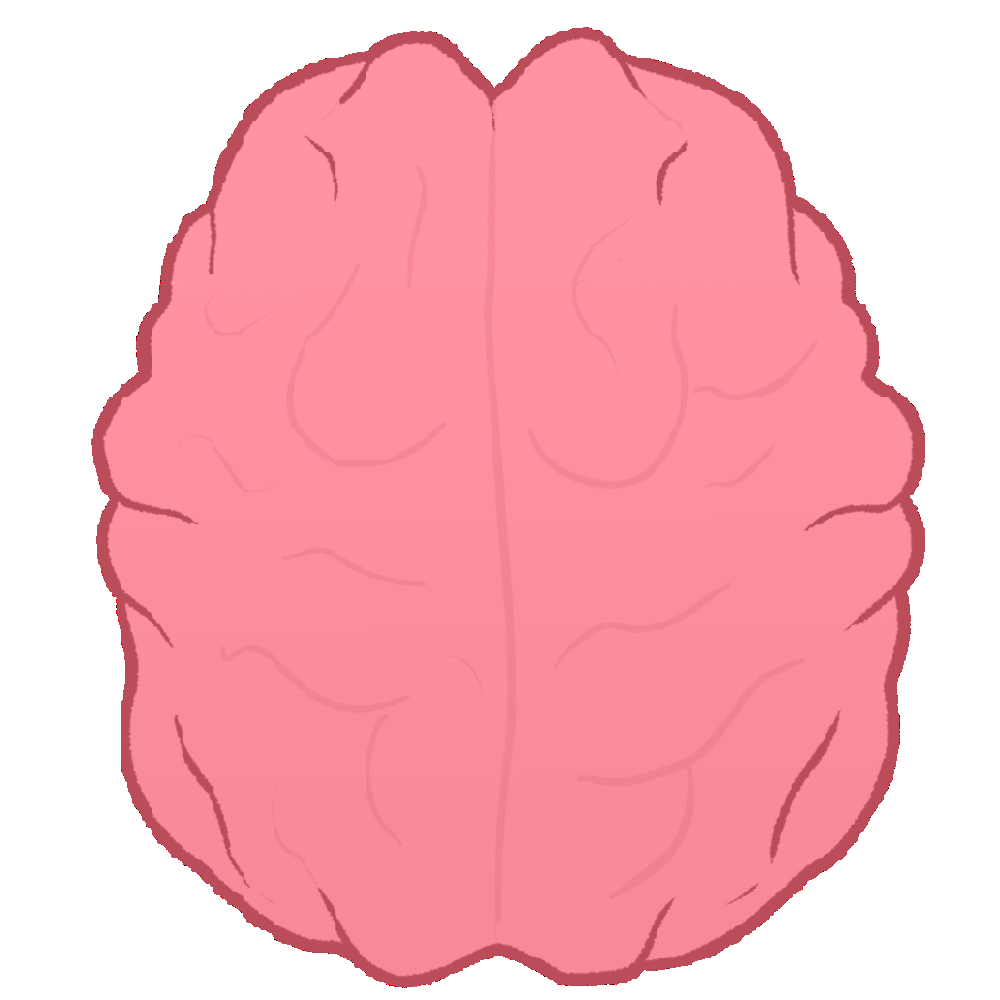
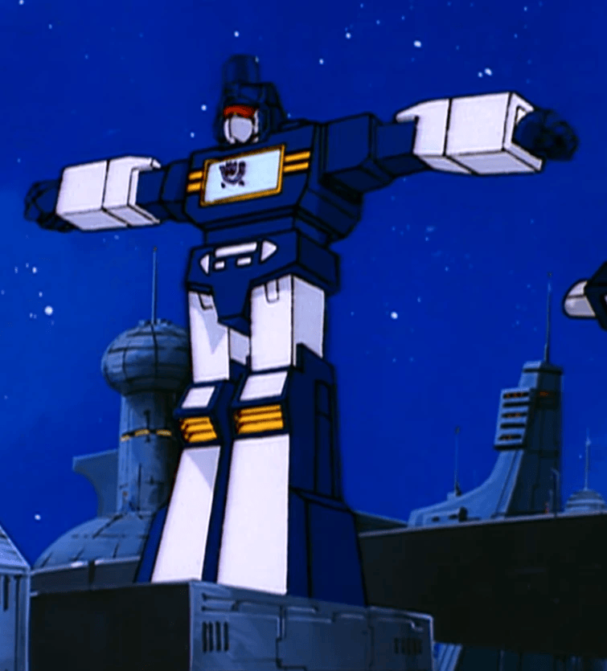
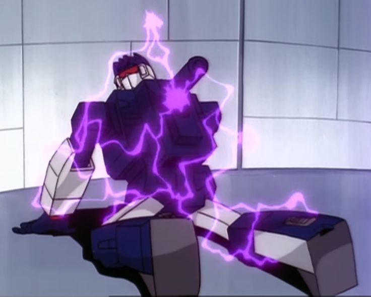

Posing Your Bots
hi, it's about 1 am right now
But I was just thinking about how much of a difference it makes when you add some poses
Like here, look at these two

a couple of fuckass losers
what are you doing just standing there, go transform or something
compare that to...

...HELLYEAHHHHHH!!!!!!!!!!!!!!!!!!!
I also got this TF Prime Predaking but he's kind of hard to pose. He's pretty big and one of the arm joints is really loose.

but I can still do something like this with him

ok that's all I wanted to say...
have some lore accurate Soundwaves:




[20th May 2026]